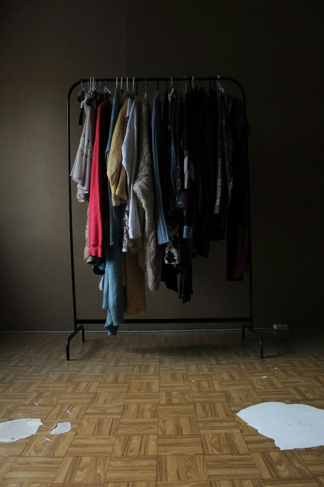
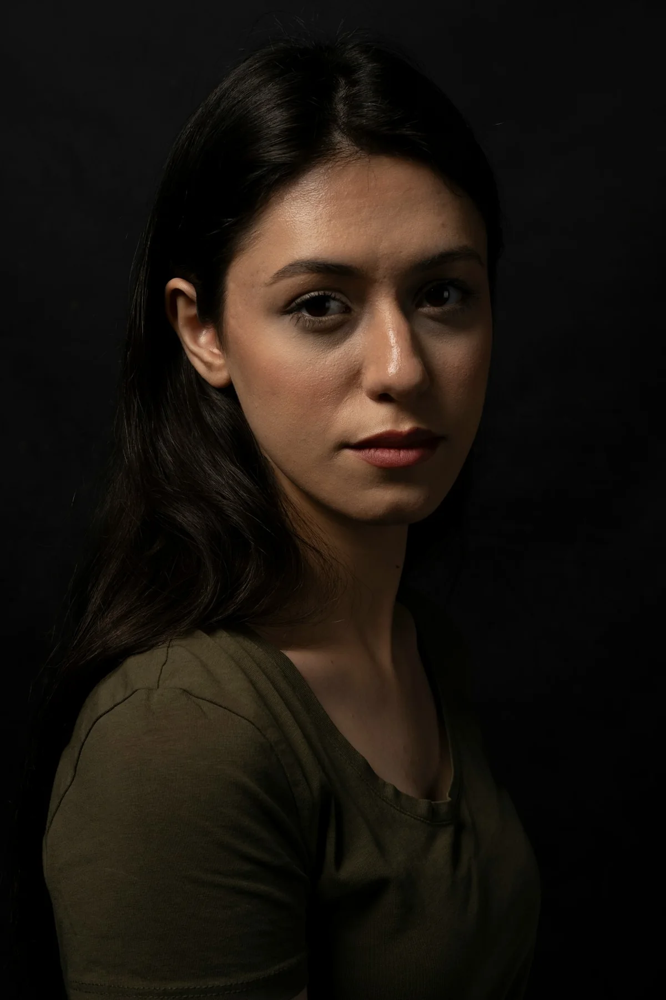
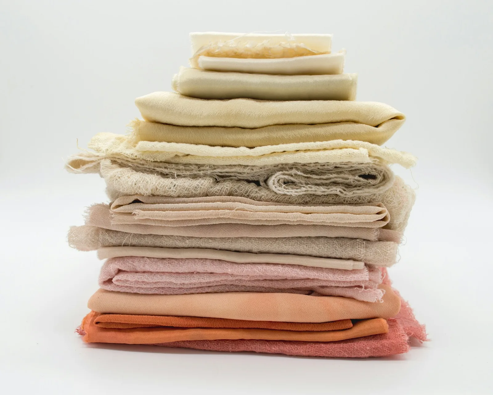
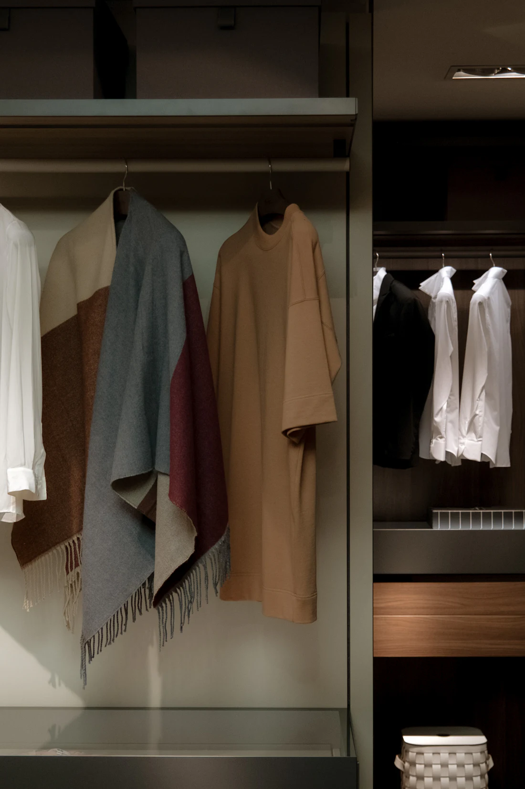
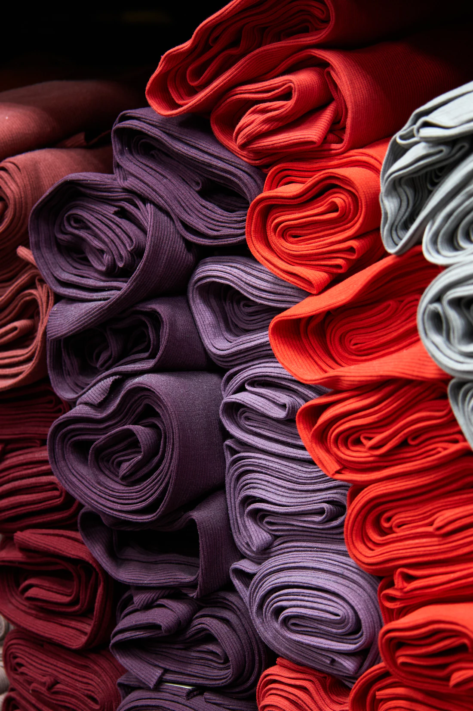

Personal colour analysis & styling, SydneyFind the colours that look like you.
Personal colour analysis and style advice with a certified image consultant, in person in Sydney or online anywhere in Australia. It starts with a free 20-minute Style Discovery.
Book a free Style Discovery
I · Nothing to wear
A full wardrobe, and still nothing to wear.
How you see yourself shapes how you show up. If getting dressed feels like guesswork, you are not alone. Do you…
- Struggle to put outfits together?
- Feel unsure which colours suit your skin tone?
- Wonder which styles flatter your body shape?
- Come home from shopping frustrated?
Usually it isn’t the clothes. It’s the colours, and nobody has shown you which ones are yours.
The drape
Watch her face, not the fabric.
II · The drape
Hold a colour under a face, and the face changes.
The grey cape
Every session starts in neutral grey, so nothing you’re wearing gets in the way.
Which one did you keep looking at?




III · The method
Personal styling services, and what you leave with.
Personal colour analysis
Find the seasonal colour palette that suits your skin tone, hair and eyes, and makes you look rested, not washed out.
Includes seasonal analysis, a personal swatch wallet, make-up colours, a wardrobe colour audit.
Personal style consultation
A personal style that fits your body shape, your life and where you want to go.
Includes body shape analysis, style direction, outfit building, a personal style guide.
Wardrobe edit & organisation
Turn a crowded wardrobe into clothes you love and can actually put together.
Includes a full wardrobe audit, an organising system, a mix-and-match guide, a shopping list.
Personal shopping
Shop with a personal stylist and stop paying for mistakes, in store or online.
Includes a pre-shop consultation, shopping trips in Sydney, online help, budget planning.
Online colour & style consultations
The same expertise from anywhere in Australia, over Zoom.
Includes online colour analysis, a virtual wardrobe review, a digital style guide, follow-up support.
Group & corporate workshops
Interactive colour and style sessions for teams, events or a group of friends.
Includes corporate workshops, group colour analysis, team events, occasion styling.
IV · In their words
Client reviews, in their own words.
My online shopping experience with Rathi was perfect. Before meeting her, I was frustrated trying to buy pieces that worked together. She made shopping easy and fun.
She got it exactly right with me. I wanted to get out of my comfort zone and explore new looks and colours, and she was spot on with all her suggestions.
Whether it’s your best colours, de-cluttering your wardrobe or a shopping trip, I highly recommend Rathi. I was extremely impressed with her natural eye for style.
The colour analysis was particularly useful and I’m thrilled with my new wardrobe. I never thought I could enjoy shopping, but Rathi made it effortless.
It has only been three days and I have had compliments on my clothes already. She is so professional and personable, and an expert in her field.
The colour consultation via Zoom worked perfectly. I finally understand why I’m drawn to certain colours, and I’ve stopped wasting money on clothes I don’t wear.
Next could be you.
V · Rathi
Hi, I’m Rathi.
I’m a certified image consultant and personal stylist based in Sydney, Australia. My passion is helping women and men become the best version of themselves, with more confidence, clarity, fun and success.
Every session is focused entirely on you: your colours, your style and a wardrobe that works, building a personal brand that is authentically yours. I’d love to be on your team, in person in Sydney or online from anywhere in Australia.
Your colours, so far
Your free 20-minute Style Discovery is where it starts. Book a free Style Discovery, and Rathi will find the colours that look like you.
Vivid by RathiPersonal colour analysis & styling. Sydney, NSW, and online Australia-wide.
HoursMon to Fri, 9am to 6pm
Sat, 10am to 4pm
ColophonSet in Bodoni Moda and Geist. Photographs from Unsplash. Design prototype.